|
| Home |
| FAQ |
| Quick Start Guide |
| Donate |
| File a bug |
ScratchTrack 0.5
Quick Start
Glossary - If you read anything, read this. Seriously. You'll be done in like five minutes.| Term |
Definition |
| Envelope Budgeting | Envelope budeting is the concept of labeling envelopes with expense names (i.e. 'dining', 'rent', 'phone', 'fun'), placing a pre-set amount of cash in those envelopes at regular intervals, and then paying expenses from those envelopes as they occur. The key concept in envelope budgting is that you don't spend money you don't have. The envelopes are a tool to help you stay on track. |
| Account |
An account represents money or debt. Checking, savings, credit card, and 'under the mattress' are all valid account types in ScratchTrack. |
| Expense |
An
expense is any kind of outflow of money. |
| Envelope |
The
astute reader is familiar with this term from the first definition. For
the slow reader, an envelope is a place to stash money for upcoming
expenses. You'll create envelopes for different categories of expenses.
In
traditional envelope budgeting, you'd have real cash-stuffed envelopes
with category names written on them. In ScratchTrack envelopes are
figurative. |
| Folder |
Folders
are used to organize envelopes. In my own workflow I have three
folders. The first two folders align
with paycheck dates and are titled "15th" and "31st". Those folders
contain envelopes that I contribute to each month and I fill them when
the associated paycheck arrives.The third folder is titled "out of
band" and contains envelopes that I don't fill ony a regular basis. |
| Transaction |
A record
of any cash flow |
With me so far? Good. Let's get started!
Adding Accounts
Accounts that contribute to the budget can have their balance assigned to envelopes (future expenses). We'll cover envelopes in a bit. Add as many accounts as you like. |
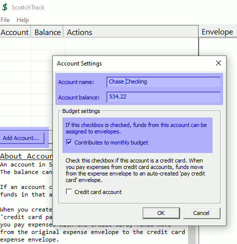 |
| Adding Credit Card Accounts ScratchTrack supports credit card accounts If a credit card account has a balance, it's typically negative (money is owed). In ScatchTrack you can pay for items with credit cards, but credit cards never contribute to the monthly budget since they don't have a positive balance. |
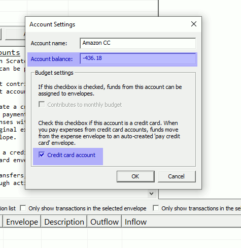 |
| Adding Folders Folders organize envelopes. You can create folders any way you like, but creating folders based on income events works well In this example we're paid on the 15th and the 31st and so we're creating folders to match. Folders have expense limits. This helps in budgeting. In this example the expense limit is set to the usual paycheck amount. As we organize the budget, we can track how much of this limit we've consumed. There's also a folder titled "Credit Cards". This is automatically created when you add a credit card account. More on that later. |
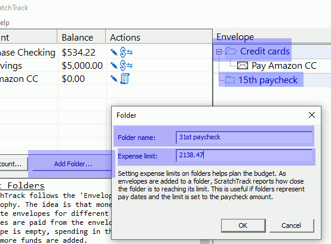 |
| Adding Envelopes Envelopes! This is the heart and soul of the workflow. The idea is to assing dollars to envelopes before any money is spent. When an expense is incurred, the expense is paid from an account with dollars assigned to an envelope for that expense type. In this example, we're setting up an envelope for our car payment. Budgeting our car payment is easy because we know exactly how much we'll need each month. In this case it's $237.84. The bottom half of this dialog box defines default settings for when we record the car payment. You don't have to set any defaults, and you can change from the defaults when you enter a transaction. |
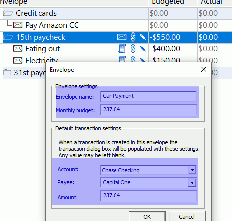 |
| Folder expense limits Now that we have envelopes in our folder, we can see how our budget lines up with our folder limit. Remember, we set the '15th paycheck' folder limit to our paycheck amount of $2,138.47. So far, we've budgeted $787.84 in that folder and we haven't recorded any expenses. |
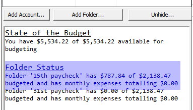 |
| Dollars available for envelopes Now that we've got accounts, folders, and envelopes, we can start assigning dollars to envelopes. In this example, we have $534.22 available to assign to envelopes. The $5,000 in savings is not included because I unchecked "Contributes to monthly budget" when adding that account. I do not want to use money from savings to pay for things. |
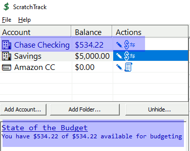 |
| Assign dollars to an envelope We've clicked the 'assign money to envelope' icon to bring up the envelope funding dialog box for the 'Car Payment' envelope. Right clicking the envelope offers the same options. Note the three options. The first option ADDS the budgeted amount to any existing amount in the envelope. This is useful for saving towards a long-term goal. An example might be a car insurance policy, where you contribute monthly, but pay twice a year. The second option SETS the envelope to the budgetd amount. If we already had $100 in this envelope, this option would add $137.84 to bring the envelope's balance to the budgeted amount. The last option sets the envelope's balance to any amount. The second screen shot shows the funded balance. |
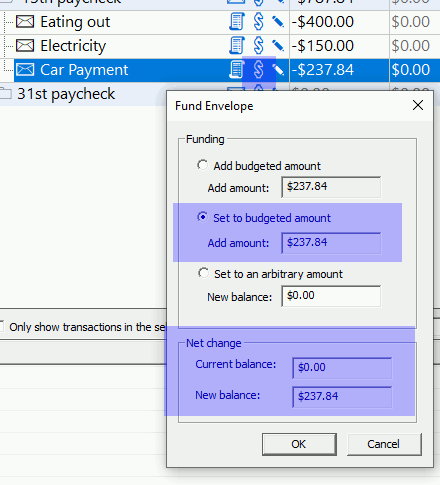 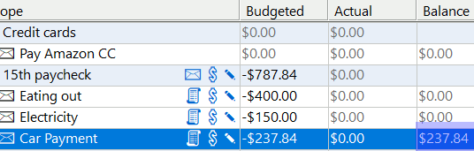 |
| Transactions Let's make the car payment We've clicked the "record expense" icon to bring up the transaction dialog box. You can also right click an envelope and get the same options. All the fields are pre-populated with the defaults we set for the envelope a few steps earlier. We can change any of these for this instance of the expense in this dialog box. |
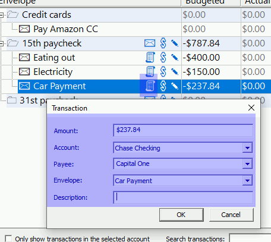 |
| Payment recorded After clicking OK, note the following:
|
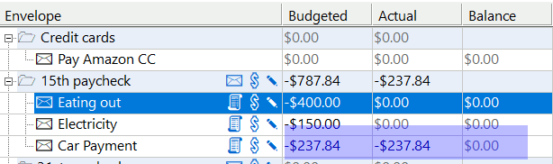 |
| Transaction List The bottom half of ScratchTrack's screen is the list of transactions There is now an entry for our car payment |
 |
| Editing transactions You can edit a transaction by double clicking it, or by right clicking it. |
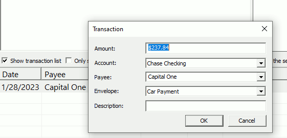 |